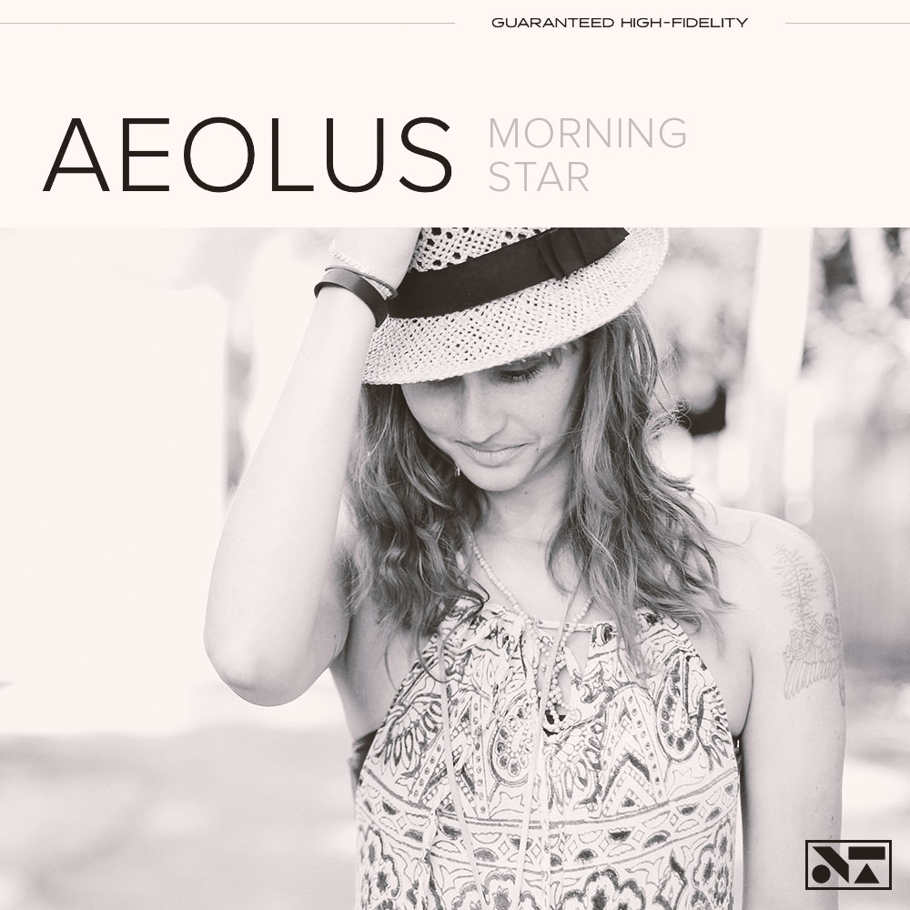

Props to AudioTheme for providing the killer Obsidian
WordPress theme. Feel free to poke around, stream our music,
and sign up for our newsletter. We have some exciting news
coming down the pipeline soon. See you down the road.
New tour dates posted
by Brody Vercher on December 16, 2014
We just announced a handful of new tour dates in support
of our latest album. Check ’em out here. See you down the road.
History of Popular Music
by Brody Vercher on December 15, 2014
“The most significant feature of the emergent popular music
industry of the late 18th and early 19th centuries was the extent
of its focus on the commodity form of sheet music” The availability
of inexpensive, widely available sheet music versions of popular
songs and instrumental music pieces made it possible for music to
be disseminated to a wide audience of amateur music-makers, who
could play and sing popular music at home. In addition to the
influence of sheet music, another factor was the increasing
availability during the late 18th and early 19th century of
public popular music performances in “pleasure gardens and dance
halls, popular theatres and concert rooms”. The early popular music
performers worked hand-in-hand with the sheet music industry to
promote popular sheet music. One of the early popular music
performers to attain widespread popularity was a Swedish opera
singer Jenny Lind, who toured the US in the mid-19th century.
During the 19th century, more people began getting involved in music
by participating in amateur choirs or joining brass bands.
Source: Wikipedia
Thanks for all your support, we couldn't do this without you
by Brody Vercher on December 14, 2014
We just want to say thanks for all the love. This has been our
biggest and best release to date and we could not have done it
without all of our supporters. Thanks again for allowing us to do
what we do.
In Every Work of Genius We Recognize Our Own Rejected Thoughts
by Brody Vercher on December 12, 2014
I read the other day some verses written by an eminent painter
which were original and not conventional. The soul always hears an
admonition in such lines, let the subject be what it may. The
sentiment they instil is of more value than any thought they may
contain. To believe your own thought, to believe that what is true
for you in your private heart is true for all men,—that is genius.
Speak your latent conviction, and it shall be the universal sense;
for the inmost in due time becomes the outmost, and our first thought
is rendered back to us by the trumpets of the Last Judgment. Familiar
as the voice of the mind is to each, the highest merit we ascribe to
Moses, Plato and Milton is that they set at naught books and
traditions, and spoke not what men, but what they thought. A man
should learn to detect and watch that gleam of light which flashes
across his mind from within, more than the lustre of the firmament
of bards and sages. Yet he dismisses without notice his thought,
because it is his. In every work of genius we recognize our own
rejected thoughts; they come back to us with a certain alienated
majesty. Great works of art have no more affecting lesson for us than
this. They teach us to abide by our spontaneous impression with good-
humored inflexibility then most when the whole cry of voices is on the
other side. Else to-morrow a stranger will say with masterly good
sense precisely what we have thought and felt all the time, and we
shall be forced to take with shame our own opinion from another.
Latest News
Welcome to our redesigned website
Props to AudioTheme for providing the killer Obsidian WordPress
theme. Feel free to poke around, str…
April 1, 2015
New tour dates posted
We just announced a handful of new tour dates in support of
our latest album. Check ’em out he…
December 16, 2014
History of Popular Music
“The most significant feature of the emergent popular music
industry of the late 18th and earl…
December 15, 2014
Morning Star Now Available!
By Brody Vercher On December 9,2014

The brand new album from Aeolus is officially available! Already
receiving critical praise, Morning Star is the band's third
album and can be purchased is a fine retailer near you or online
at all major digital outlets.
About Obsidian
The Obsidian theme, like the naturally occuring
volcanic glass of the same name, possesses an inherent
allure that's stylish in appearance and pratical in
purpose. With distinctive background options and various
customization possibilites, Obsidian makes it easy to create
the ultimate hub for your online identity.